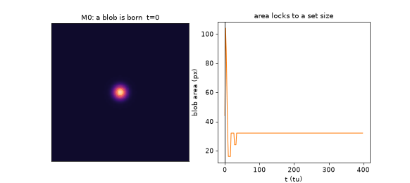

M1 — a traveling blob (τ=5.0 > τ_c): steady speed, straight
kick-chosen track, shape preserved while moving. Certified unpinned: speed changes 0.6%
under 2× grid refinement.
The world is a periodic 2-D square. Three scalar fields live on it:
| field | role | timescale | range | intuition |
|---|---|---|---|---|
u | activator | fast (1) | short (Du=1) | the "substance" of a blob; self-amplifying (cubic), wants to run away |
v | slow inhibitor | slow (τ) | short-to-mid (Dv) | local memory / drag; where u has been, v builds up and pushes back |
w | fast long-range inhibitor | very fast (θ=0.7) | long (Dw=20) | a wide "exclusion halo" broadcast around any activity; stops spreading and keeps blobs apart |
This is the three-component reaction–diffusion system of the Purwins / Schenk gas-discharge class — a laboratory system (planar gas discharges) in which all of the phenomena below were first seen experimentally. Baseline parameters (the "M0 point"): λ=2, k₁=−0.7, k₃=1, k₄=1.5, τ=3, θ=0.7, Du=Dv=1, Dw=20.
The uniform "vacuum" state u=v=w=u₀ (the most negative root of
−u³+(λ−k₃−k₄)u+k₁=0, u₀≈−0.70) is stable: small pokes die out. But a big enough local
poke flips a patch of u onto the upper branch of the cubic, and the patch
then self-stabilizes: the long-range w halo it broadcasts prevents it
from growing or splitting, while the activator core prevents it from dying. The result is
a dissipative soliton — a self-maintaining, fixed-size spot of "on" field in an
"off" world. That is a blob. Its identity is measured (connected components + tracking),
never stored: delete the fields and the blob is gone; move the fields and the blob moved.

At M0 the blob sits still. Motion is a phase transition, not a given: the slow inhibitor v sits centered under the blob and cancels any nudge (the blob is overdamped). Two dials change that: lower Dv (make the drag field narrower) and raise τ (make it slower). Past a critical point the resting state becomes unstable — the blob "outruns its own shadow": v lags behind, the asymmetry pulls the blob forward, and steady self-propelled motion appears.
The square-root onset is the textbook signature of a supercritical drift bifurcation. Direction is free: under noise alone, 8/8 runs picked directions scattered across the compass (none along grid axes) — the motion belongs to the physics, not the lattice.
| treatment | τ=4.85 | τ=4.80 |
|---|---|---|
| explicit Euler, dx=1 (Day-0 numerics) | stationary, c=0 (pinned) | — |
| IMEX-FFT, dx=1 (isotropy fixed, washboard remains) | creeping, c≈0.002 | stationary, c≈0.001 |
| IMEX-FFT, dx=0.5 (certified treatment) | traveling, c=0.033, exactly along the 30° kick | traveling (law: onset τ_c=4.78) |
Blobs interact through their field tails. The w halo gives plain repulsion — that alone would make a gas of loners. But with a wider slow inhibitor (Dv=2, τ=2.5), the v-tail develops a gentle oscillation: rings of alternating push and pull around each blob. A neighbor sliding down that corrugated landscape gets trapped at the first well — a bond at a preferred separation:


To get more than one kind of blob, the architecture is: each species gets a private activator ui and private slow inhibitor vi, and all species share one long-range w (driven by the average activity). Private u,v = a species' own chemistry; shared w = a common "space" they all exclude each other from. A one-parameter iso-background line (k₁ and k₄ co-varied so the vacuum state stays identical) lets us dial species apart without destabilizing the world:
| species | k₁ | k₄ | size | w-footprint | character |
|---|---|---|---|---|---|
| A | −1.00 | 1.40 | 169 px | wide (peak 0.45) | large, broad, strong presence |
| B | −1.65 | 2.15 | 25 px | narrow (peak 0.23) | small, sharp — the natural "cargo" |

Species are port-distinguishable: a probe patch reading only the shared w field classifies A vs B correctly 20/20 — an agent at an anonymous port can tell flavors apart without god vision. Encounters conserve flavor (A+B, A+A, B+B all repel at working distances; the only exception is a documented deterministic A+A merge at near-contact). No conversion, no annihilation.
Round-1 left a tension: binding was certified at (Dv=2.0, τ=2.5), motility at (Dv=0.65, τ>4.78) — no overlap. The resolution is a one-line theorem: the steady states depend on τ and Dv only through the product A = τ·Dv (set ∂v/∂t=0: u = v − τDv∇²v). So the whole static world — blob shape, tails, bond wells — is frozen along any path with A fixed, while τ alone dials the drift instability. Binding lived at A=5, motility at A≈3.1. The M4 family holds A=4 (bond exists, slightly shallower: static d*≈15.4) and walks τ up with Dv=4/τ:
The traveling bond is a wake-locked tandem: the pair moves along its own axis, follower surfing the leader's wake at discrete shell distances (14.78 or 25.68 — spaced by the tail wavelength ~10.9). Trains of three go faster than pairs, which go faster than singles (0.143 > 0.141 > 0.123): each blob deepens the collective wake.

A machine needs an opponent: a load field the cargo will not climb by itself. The trick that makes this clean is zero-footprint forcing ("isok" mode): shift (k₁, k₄) together along the iso-background line as a static function of position, b(x). The vacuum state stays an exact fixed point everywhere (checked to 1e−16) — the landscape is invisible until a blob shows up, and then it feels a force pushing it "downhill" toward lower b. A sawtooth b(x) (5 teeth, period 32, gentle rise + sharp cliff) makes a periodic track where downstream = down the long rising ramps.
The machine, assembled entirely from certified parts:
| part | made of | function |
|---|---|---|
| locomotive | 3-blob wake-locked train (M4), τ=5.70 | self-propulsion c≈0.06–0.09, strong enough to climb (a pair is NOT: it reverses on any tested tooth — measured, hence 3 blobs minimum, climb margin 1.53×) |
| track | isok sawtooth b(x), ε=5·10⁻⁴ | the adversary: every parked blob slides downstream into a trough and stays |
| parking brake | pair-only zone (M4) | lone cargo cannot move itself — it waits exactly where it parked |
| rails | static y-channel: bchan(y)=0.002·min(|y−y₀|, 24) | a shallow zero-footprint valley in the cross direction keeping the train on axis (without rails the growing train buckles into the trough valley after 1–2 pickups — the certified failure of machine v1) |
| coupler | M2/M4 wake shells | head-on pickup: cargo locks into the leader's front shell at 14.9 px and becomes the new leader — a pusher-tug; train speed grows per pickup (0.059 → 0.073 → 0.085) |

Two emergent bonuses, neither designed: at the 6-train power ceiling the machine sheds its rear blob, which slides back, parks at a trough (pair-only zone again), and is re-collected on the next lap — a self-healing relay. And because pickup happens by wake capture, the machine needs no controller at all after t=0: one initial kick, then pure autonomous physics for as long as we watched.
All measured windows below are from the certified probe campaigns (fresh-seed audited). "Death" = blob decays to vacuum; "replication" = blob splits into spreading spot soup — the two cliffs that bound every corridor in this world.
| dial | meaning | baseline | measured effect & window |
|---|---|---|---|
λ | drive / nonlinearity scale | 2.0 | sets activator plateau (±√λ) and overall energy scale; not scanned as a control dial |
k₁ | global bias ("vacuum depth") | −0.7 | THE existence dial: −0.9 death · −0.7 blob · −0.5 replication (M0). Traveling corridor k₁∈(−0.75,−0.68). Binding sits ~0.1 from the replication edge. Positional shifts of k₁ = force on blobs (see isok) |
k₃ | v-inhibition strength | 1.0 | held fixed; k₃/k₄ balance sets how much of the inhibition is "memory" vs "halo" |
k₄ | w-inhibition strength | 1.5 | 1.35–1.65 binding window; 2.5 = spot soup at M0; ≥1.7 replication cascades when pairs form. In flavors, k₄ is the species dial (A:1.40, B:2.15) along the iso-line |
τ | slow-inhibitor time constant | 3.0 | THE motion dial. Single-blob drift onset τ_c=4.78 (A≈3.1); pair onset 5.636 (A=4); pair-only zone (5.636, 5.748); replication ≥6.2 (A=4). Statics blind to τ at fixed A |
θ | fast-inhibitor time constant | 0.7 | 0.35 kills the M0 blob (halo reacts too fast); windows ≥2.2× wide around baseline elsewhere |
Du | activator diffusion | 1.0 | blob core size scale; flavors species use 0.65 |
Dv | slow-inhibitor diffusion | 1.0 | with τ only via A=τ·Dv for statics: A=5 deep bond d*=15.70 (never travels) · A=4 shallower bond d*≈15.4 that CAN travel · A≈3.1 single-blob motility. Dynamically: narrower v (smaller Dv) = easier drift |
Dw | halo range | 20 | long-range repulsion & wall cushion; also the stiff term that forces implicit integration (explicit Euler needs dt<dx²/(4Dw)) |
σ (noise) | additive field noise | 2·10⁻³ | blob survives to 0.075, dies 0.09; bonds outlive 4000 tu at 0.075. Too stiff for noise ratchets: positional diffusion ≈ 0 (measured; honest negative) |
ε (isod/isok) | slope of the zero-footprint load field | — | two-species world: cargo drift v=−0.906ε (linear to 0.03, safe ≤0.02). Single-species near-onset (τ=5.7): susceptibility amplified ~50× (v up to −0.08) — measured, used as the machine's adversary. Machine tooth ε=5·10⁻⁴; pair reverses at b≈0.005; 3-train climbs to b≈0.0104; replication cliff b≤−0.09 |
A rail is not an object — it is a static, zero-footprint potential in the cross-track direction: bchan(y) = 0.002·min(|y−y₀|, 24) added to the same iso-line shift that makes the track. It is a V-shaped valley in parameter space, invisible to the vacuum, that gently pushes any blob back toward the channel centerline (measured: cargo injected 6 px off-axis is centered to ±0.5 px while being conveyed). Rails were forced by an honest failure: without them, the growing train buckles sideways into the saw's trough valley after 1–2 pickups. (In the two-species world we also certified self-assembled walls — a blob parked on a gradient ridge destabilizes into a static stripe that blocks or channels cargo — defect turned tool; the machine uses the simpler potential rails.)
| missing piece | status |
|---|---|
| Unload / release | bonds never break below the replication edge — machine v1 delivers displacement, not release. The unbinding primitive is the next physics hunt (M6) |
| Rotation | bound pairs refuse to orbit (angular kicks lock or straighten); mixed-species pairs untested — open |
| Flavor-selective machines | needs B–B binding in the two-species world (never searched); currently cargo = carrier species |
| Big continuum species | species A is lattice-stabilized; a truly continuum large blob is parked until a machine needs the 6.8× size contrast |
| Max-train-length law | the 6-train sheds its rear blob (power ceiling) — worth mapping if longer hauls are wanted |